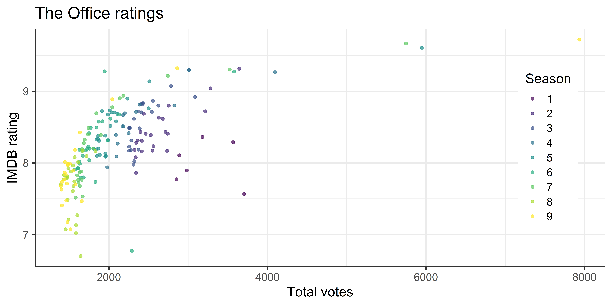
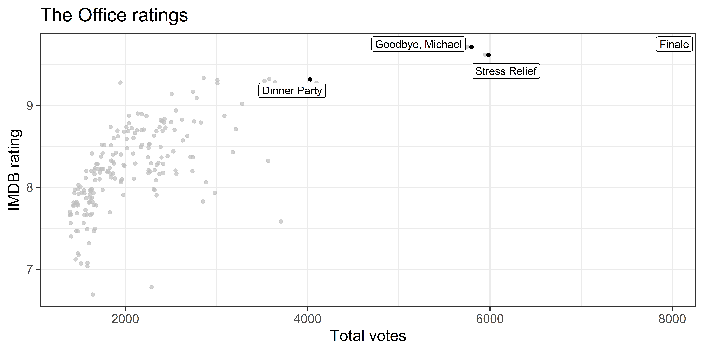

Prof. Tackett will not have office hours on Friday
Email to schedule an appointment if you need to meet
All other office hours on regular schedule
Statistician of the day: Rafael Irizarry
Dr. Rafael Irizarry is a Professor of Biostatistics at the Harvard T.H. Chan School of Public Health and Professor of Biostatistics and Computational Biology at the Dana-Farber Cancer Institute. He earned a Bachelor of Science degree in Mathematics from the University of Puerto Rico at Rio Piedras and a PhD from the University of California, Berkeley in Statistics. Dr. Irizarry’s work is highly cited, and he has been given many prestigious awards including the Presidents’ Award given by the Committee of Presidents of Statistical Societies.
Part of a team that used stratified sampling to survey residents in Puerto Rico about the impacts of the 2017 Hurricane Maria
Estimated percent of population who lost access to services, such as electricity and water, and the association with remoteness
Used confidence intervals to estimate deaths that were directly and indirectly attributable to the hurricane
Their estimate was more than 70 times the official count
Article: Kishore, N., Marqués, D., Mahmud, A., Kiang, M. V., Rodriguez, I., Fuller, A., ... & Buckee, C. O. (2018). Mortality in Puerto Rico after Hurricane Maria. New England journal of medicine, 379(2), 162-170.
The lines are not parallel indicating there is an interaction effect. The slope of annual income differs based on the income verification.
Warning: A numeric `legend.position` argument in `theme()` was deprecated in ggplot2
3.5.0.
ℹ Please use the `legend.position.inside` argument of `theme()` instead.
`geom_smooth()` using formula = 'y ~ x'
`geom_smooth()` using formula = 'y ~ x'
Data manipulation 4: Create interaction variables
Defining the interaction variable in the model formula as verified_income * annual_income_th_cent is an implicit data manipulation step as well
What the interaction means: The effect of annual income on the interest rate differs by -0.016 when the income is source verified compared to when it is not verified, holding all else constant.
Interpreting annual_income for source verified: If the income is source verified, we expect the interest rate to decrease by 0.023% (-0.007 + -0.016) for each additional thousand dollars in annual income, holding all else constant.
Rows: 188 Columns: 6
── Column specification ────────────────────────────────────────────────────────
Delimiter: ","
chr (1): title
dbl (4): season, episode, imdb_rating, total_votes
date (1): air_date
ℹ Use `spec()` to retrieve the full column specification for this data.
ℹ Specify the column types or set `show_col_types = FALSE` to quiet this message.
office_ratings
# A tibble: 188 × 6
season episode title imdb_rating total_votes air_date
<dbl> <dbl> <chr> <dbl> <dbl> <date>
1 1 1 Pilot 7.6 3706 2005-03-24
2 1 2 Diversity Day 8.3 3566 2005-03-29
3 1 3 Health Care 7.9 2983 2005-04-05
4 1 4 The Alliance 8.1 2886 2005-04-12
5 1 5 Basketball 8.4 3179 2005-04-19
6 1 6 Hot Girl 7.8 2852 2005-04-26
7 2 1 The Dundies 8.7 3213 2005-09-20
8 2 2 Sexual Harassment 8.2 2736 2005-09-27
9 2 3 Office Olympics 8.4 2742 2005-10-04
10 2 4 The Fire 8.4 2713 2005-10-11
# ℹ 178 more rows
IMDB ratings
IMDB ratings vs. number of votes

Outliers

IMDB ratings vs. air date
IMDB ratings vs. seasons
Modeling
Spending our data
There are several steps to create a useful model: parameter estimation, model selection, performance assessment, etc.
Doing all of this on the entire data we have available leaves us with no other data to assess our choices
We can allocate specific subsets of data for different tasks, as opposed to allocating the largest possible amount to the model parameter estimation only (which is what we’ve done so far)
Splitting the data
Take a random sample of X% of the data and set aside (testing data)
Typically 10 - 20%
Fit a model on the remaining Y% of the data (training data)
Typically 80 - 90%
Use the coefficients from the model fit on training data to make predictions and evaluate performance on the testing data
Train / test
Step 1: Create an initial split:
set.seed(123)office_split <-initial_split(office_ratings, prop =0.75) # prop = 0.75 by default
# A tibble: 141 × 6
season episode title imdb_rating total_votes air_date
<dbl> <dbl> <chr> <dbl> <dbl> <date>
1 8 18 Last Day in Florida 7.8 1429 2012-03-08
2 9 14 Vandalism 7.6 1402 2013-01-31
3 2 8 Performance Review 8.2 2416 2005-11-15
4 9 5 Here Comes Treble 7.1 1515 2012-10-25
5 3 22 Beach Games 9.1 2783 2007-05-10
6 7 1 Nepotism 8.4 1897 2010-09-23
7 3 15 Phyllis' Wedding 8.3 2283 2007-02-08
8 9 21 Livin' the Dream 8.9 2041 2013-05-02
9 9 18 Promos 8 1445 2013-04-04
10 8 12 Pool Party 8 1612 2012-01-19
# ℹ 131 more rows
Feature engineering
We prefer simple (parsimonious) models when possible, but parsimony does not mean sacrificing accuracy (or predictive performance) in the interest of simplicity
Variables that go into the model and how they are represented are just as critical to success of the model
Feature engineering allows us to get creative with our predictors in an effort to make them more useful for our model (to increase its predictive performance and improve interpretability)
office_rec <-recipe(imdb_rating ~ ., data = office_train) |># make title's role IDupdate_role(title, new_role ="ID") |># extract day of week and month of air_datestep_date(air_date, features =c("dow", "month")) |># identify holidays and add indicatorsstep_holiday( air_date, holidays =c("USThanksgivingDay", "USChristmasDay", "USNewYearsDay", "USIndependenceDay"), keep_original_cols =FALSE ) |># turn season into factorstep_num2factor(season, levels =as.character(1:9)) |># make dummy variablesstep_dummy(all_nominal_predictors()) |># remove zero variance predictorsstep_zv(all_predictors())
When building recipes you in a pipeline, you don’t get to see the effect of the recipe on your data, which can be unsettling
You can take a peek at what will happen when you ultimately apply the recipe to your data at the time of fitting the model
This requires two functions: prep() to train the recipe and bake() to apply it to your data
Note
This is optional, we’ll show the results for demonstrative purposes. It doesn’t need to be part of your modeling pipeline, but it can be assuring to see the effects of the recipe steps as you build the recipe.